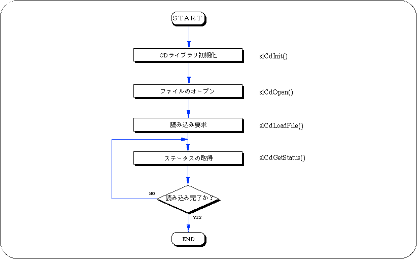
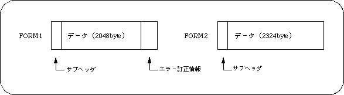
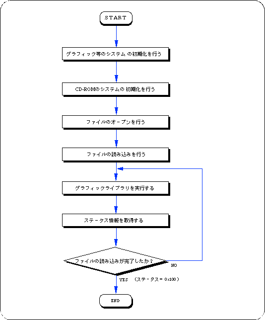
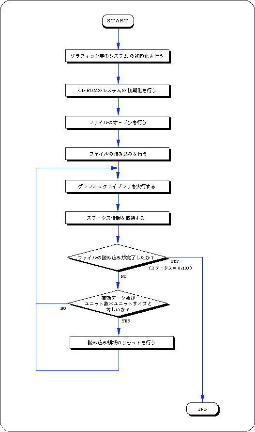
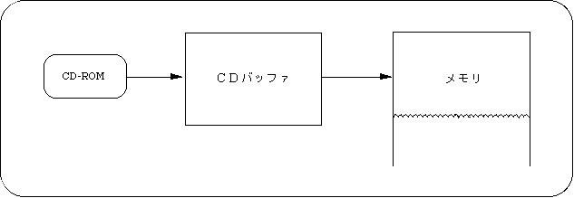
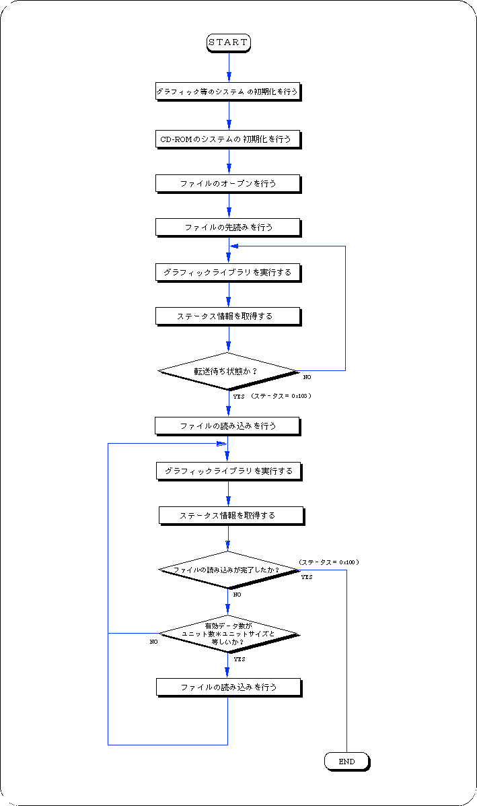
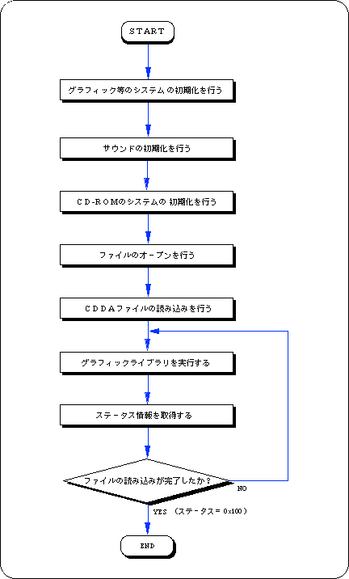
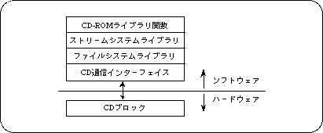

★SGL User's Manual
★PROGRAMMER'S TUTORIAL
★SGL User's Manual
★PROGRAMMER'S TUTORIAL
本章では、ＣＤ−ＲＯＭライブラリを使ってＣＤ−ＲＯＭにアクセスする方法について解説します。ＣＤ−ＲＯＭライブラリを使うことにより、ＣＤ−ＲＯＭからのデータやプログラムの読み込み、および音楽の再生を行うことができます。 またこの章では、ＣＤ−ＲＯＭライブラリの関数リファレンス一覧も載せています。
注 意  |
CD-ROMライブラリ関数は、別冊の“関数リファレンス”に載せずに、本章の後半に載せてあります。 |
|---|
図12-1 CD-ROMアクセスの流れ

図12-2 セクタの構造

buf[ i ]. type = CDBUF_COPY; buf[ i ]. trans.copy.addr = 読み込み領域のアドレス; buf[ i ]. trans.copy.unit = 読み込み領域サイズの単位 (CDBUF_FORM1/CDBUF_FORM2/CDBUF_BYTE); buf[ i ]. trans.copy.size = 読み込み領域のユニット数;
buf[ i ]. type = CDBUF_FUNC; buf[ i ]. trans.func.func. = 関数ポインタ; buf[ i ]. trans.func.obj = 関数の第一引数に渡す値;
フロー12-1 サンプルプログラム1（ファイルの読み込み sample_cd1/main.c）

/*****************************************************************************
*
* Copyright (c) 1994 SEGA
*
* File :main.c
* Date :1995-02-20
* Version:0.00
* Auther :
****************************************************************************/
#include "sgl.h"
#include "sgl_cd.h"
/****************************************************************************/
#define MAX_FILE 128
#define READSECT 50
/****************************************************************************/
Sint32 dirwork[SLCD_WORK_SIZE(MAX_FILE)];
Sint32 readbuf[ READSECT * CDBUF_FORM1 / sizeof(Sint32)];
/****************************************************************************/
void ss_main(void)
{
Sint32 ndir;
CDHN cdhn;
CDKEY key[2];
CDBUF buf[2];
Sint32 stat;
Sint32 len[2];
Sint32 ypos = 1;
slInitSystem(TV_320x224, NULL, 1);
ndir = slCdInit(MAX_FILE, dirwork);
slPrint("slCdInit:", slLocate(1,ypos));
slPrintFX(toFIXED(ndir), slLocate(11, ypos));
ypos++;
key[0].cn = key[0].sm = key[0].ci = CDKEY_NONE;
key[1].cn = CDKEY_TERM;
cdhn = slCdOpen("S2100D0_.M", key);
slPrint("slCdOpen:", slLocate(1, ypos));
slDispHex((Uint32)cdhn, slLocate(11, ypos));
buf[0].type = CDBUF_COPY;
buf[0].trans.copy.addr = readbuf;
buf[0].trans.copy.unit = CDBUF_FORM1;
buf[0].trans.copy.size = READSECT;
buf[1].type = CDBUF_TERM;
slCdLoadFile(cdhn, buf);
ypos++;
while (1) {
slSynch();
stat = slCdGetStatus(cdhn, len);
slPrint("stat:", slLocate(1, ypos));
slDispHex((Uint32)stat, slLocate(7, ypos));
ypos++;
if (ypos >= 27) ypos = 1;
if (stat == CDSTAT_COMPLETED) break;
}
while (1) ;
}
このサンプルプログラムはＣＤ−ＲＯＭ上のファイルを分割して読み込むための処理であり、ＣＤ−ＲＯＭからファイルを読み込む基本的なライブラリの使用例です。フロー12-2に沿って手順を説明します。
フロー12-2 サンプルプログラム2（ファイルの分割読み込み sample_cd2/main.c）

/*****************************************************************************
*
* Copyright (c) 1994 SEGA
*
* File :main.c
* Date :1995-02-20
* Version:0.00
* Auther :
****************************************************************************/
#include "sgl.h"
#include "sgl_cd.h"
/****************************************************************************/
#define MAX_OPEN 128
#define FNAME "S2100D0_.M"
#define slsize 2
/****************************************************************************/
Sint32 lib_work[SLCD_WORK_SIZE(MAX_OPEN)];
Sint32 readbuf[ (CDBUF_FORM1 * slsize) / sizeof(Sint32) ];
/****************************************************************************/
void ss_main(void)
{
Sint32 ndir ;
Sint32 ypos = 1 ;
Sint32 ret ;
Sint32 ndata[2] ;
CDHN cdhn ;
CDKEY key[2] ;
CDBUF buf[2] ;
slInitSystem(TV_320x224, NULL, 1) ;
ndir = slCdInit(MAX_OPEN, lib_work);
slPrint("slCdInit:", slLocate(1,ypos));
slPrintFX(toFIXED(ndir), slLocate(11, ypos));
ypos++;
key[0].cn = key[0].sm = key[0].ci = CDKEY_NONE ;
key[1].cn = CDKEY_TERM ;
cdhn = slCdOpen(FNAME, key);
slPrint("slCdOpen:", slLocate(1, ypos));
slDispHex((Uint32)cdhn, slLocate(11, ypos));
buf[0].type = CDBUF_COPY ;
buf[0].trans.copy.addr = readbuf ;
buf[0].trans.copy.unit = CDBUF_FORM1 ;
buf[0].trans.copy.size = slsize ;
buf[1].type = CDBUF_TERM ;
ypos++;
slCdLoadFile(cdhn, buf);
while( 1 ){
slSynch();
ret = slCdGetStatus( cdhn, ndata ) ;
slPrint("stat:", slLocate(1, ypos));
slDispHex( (Uint32)ret, slLocate(7, ypos));
ypos++;
if (ypos >= 27) ypos = 3 ;
if ( ret == CDSTAT_COMPLETED ) break;
if ( ndata[0] == CDBUF_FORM1 * slsize ){
slCdResetBuf(cdhn, &(key[0]));
}
}
while( 1 ) ;
}
図12-3 CDバッファ

buf[ i ]. type = CDBUF_COPY; buf[ i ]. trans.copy.addr = NULL; buf[ i ]. trans.copy.unit = CDBUF_FORM1; buf[ i ]. trans.copy.size = 0;
フロー12-3 サンプルプログラム3（先読み sample_cd3/main.c）

/*****************************************************************************
* Copyright (c) 1994 SEGA
*
* File :main.c
* Date :1995-02-20
* Version:0.00
* Auther :
*
****************************************************************************/
#include "sgl.h"
#include "sgl_cd.h"
/****************************************************************************/
#define MAX_OPEN 128
#define FNAME "S2100D0_.M"
#define slsize 2
/****************************************************************************/
Sint32 lib_work[SLCD_WORK_SIZE(MAX_OPEN)];
Sint32 readbuf[ (CDBUF_FORM1 * slsize) / sizeof(Sint32)] ;
/****************************************************************************/
void ss_main(void)
{
Sint32 ndir ;
Sint32 ypos = 1 ;
Sint32 ret ;
Sint32 ndata[2] ;
CDHN cdhn ;
CDKEY key[2] ;
CDBUF buf[2] ;
slInitSystem(TV_320x224, NULL, 1) ;
ndir = slCdInit(MAX_OPEN, lib_work);
slPrint("slCdInit:", slLocate(1,ypos));
slPrintFX(toFIXED(ndir), slLocate(11, ypos));
ypos++;
key[0].cn = key[0].sm = key[0].ci = CDKEY_NONE ;
key[1].cn = CDKEY_TERM ;
cdhn = slCdOpen(FNAME, key);
slPrint("slCdOpen:", slLocate(1, ypos));
slDispHex((Uint32)cdhn, slLocate(11, ypos));
buf[0].type = CDBUF_COPY ;
buf[0].trans.copy.addr = NULL ;
buf[0].trans.copy.unit = CDBUF_FORM1 ;
buf[0].trans.copy.size = 0;
buf[1].type = CDBUF_TERM ;
slCdLoadFile( cdhn, buf );
ypos++;
while( 1 ){
slSynch();
ret = slCdGetStatus( cdhn, NULL ) ;
slPrint("stat1:", slLocate(1, ypos));
slDispHex( (Uint32)ret, slLocate(7, ypos));
ypos++;
if (ypos >= 27) ypos = 3;
if ( ret == CDSTAT_WAIT ) {
buf[0].trans.copy.addr = readbuf ;
buf[0].trans.copy.size = slsize;
break ;
}
}
slCdLoadFile( cdhn, buf );
while( 1 ){
slSynch();
ret = slCdGetStatus( cdhn, ndata ) ;
slPrint("stat2:", slLocate(1, ypos));
slDispHex( ret, slLocate(7, ypos));
ypos++;
slPrint("ndata:", slLocate(1, ypos));
slDispHex( ndata[0], slLocate(7, ypos));
ypos++;
if (ypos >= 27) ypos = 3 ;
if ( ret == CDSTAT_COMPLETED ) break;
if ( ndata[0] == CDBUF_FORM1 * slsize ){
slCdLoadFile(cdhn, buf);
}
}
while( 1 ) ;
}
buf[ 0 ]. type = CDBUF_COPY; buf[ 0 ]. trans.copy.addr = NULL; buf[ 0 ]. trans.copy.unit = CDBUF_FORM1; buf[ 0 ]. trans.copy.size = 0; buf[ 1 ]. type = CDBUF_TERM;
フロー12-4 サンプルプログラム4（CDDAファイルの再生 sample_cd4/main.c）

/*****************************************************************************
*
* Copyright (c) 1994 SEGA
*
* File :main.c
* Date :1995-02-20
* Version:0.00
* Auther :
*
****************************************************************************/
#include "sgl.h"
#include "sgl_cd.h"
#include "sddrvs.dat"
/****************************************************************************/
#define WIN_ORG_X 0
#define WIN_ORG_Y 0
#define WIN_SIZE_X 320
#define WIN_SIZE_Y 240
#define MAX_FILE 128
Sint32 dirwork[SLCD_WORK_SIZE(MAX_FILE)];
Uint8 sdmap[] = {
0x00, 0x00, 0xB0, 0x00, 0x00, 0x00, 0x80, 0x00,
0x10, 0x01, 0x30, 0x00, 0x00, 0x00, 0x10, 0x00,
0x11, 0x01, 0x40, 0x00, 0x00, 0x00, 0x20, 0x00,
0x20, 0x01, 0x60, 0x00, 0x00, 0x00, 0x06, 0x00,
0x21, 0x01, 0x68, 0x00, 0x00, 0x00, 0x06, 0x00,
0x22, 0x01, 0x70, 0x00, 0x00, 0x00, 0x06, 0x00,
0x23, 0x01, 0x78, 0x00, 0x00, 0x00, 0x06, 0x00,
0x24, 0x01, 0x80, 0x00, 0x00, 0x00, 0x06, 0x00,
0x01, 0x01, 0x86, 0x00, 0x00, 0x04, 0x00, 0x00,
0x30, 0x05, 0xA0, 0x00, 0x00, 0x02, 0x00, 0x00,
0xFF, 0xFF
};
/****************************************************************************/
void ss_main(void)
{
Sint32 ndir;
CDHN cdhn;
CDBUF buf[2];
CDKEY key[2];
Sint32 stat;
slInitSystem(TV_320x224, NULL, 1);
slInitSound(sddrvstsk, sizeof(sddrvstsk), sdmap, sizeof(sdmap));
slCDDAOn(127, 127, 0, 0);
ndir = slCdInit(MAX_FILE, dirwork);
key[0].cn = CDKEY_NONE;
key[0].sm = CDKEY_NONE;
key[0].ci = CDKEY_NONE;
key[1].cn = CDKEY_TERM;
cdhn = slCdOpen("cdda1", key);
buf[0].type = CDBUF_COPY;
buf[0].trans.copy.addr = NULL;
buf[0].trans.copy.unit = CDBUF_FORM1;
buf[0].trans.copy.size = 0;
buf[1].type = CDBUF_TERM;
slCdLoadFile(cdhn, buf);
while (1) {
slSynch();
stat = slCdGetStatus(cdhn, NULL);
if (stat == CDSTAT_COMPLETED) break;
}
while (1)
;
}
図12-4 CD-ROMライブラリの内部構造

typedef struct {
Sint16 cn;
Sint16 sm;
Sint16 ci;
}CDKEY;
cn | チャネル番号 |
|---|---|
sm | サブモード |
ci | コーディング情報 |
typedef struct {
void *addr;
Sint32 unit;
Sint32 size;
} TRANS_COPY;
typedef struct {
Sint32 (*func) (void *obj, Uint32 *addr,
Sint32 adinc, Sint32 nsct);
void *obj;
} TRANS_FUNC;
typedef struct {
Sint32 type;
union {
TRANS_COPY copy;
TRANS_FUNC fucn;
} trans;
} CDBUF;
type CDBUF_COPY ワークRAMへのコピー
CDBUF_FUNC 転送関数
CDBUF_TERM 終端
-------------------------------------------------------
type = CDBUF_COPYの場合 : copy
-------------------------------------------------------
addr 読み込み領域のアドレス（読み込まない場合NULL ）
unit CDBUF_FORM1 読み込み領域のサイズは2048byte単位
CDBUF_FORM2 読み込み領域のサイズは2324byte単位
CDBUF_BYTE 読み込み領域のサイズはバイト単位
size 読み込み領域のユニット数（読み込まない場合0）
-------------------------------------------------------
type = CDBUF_FUNC の場合 : func
-------------------------------------------------------
func 転送関数
obj オブジェクト
nfile | 1ディレクトリ中の最大ファイル数 |
|---|---|
work | 作業領域 |
pathname | パス名（相対パス/絶対パス指定可能） |
|---|
pathname | パス名（相対パス/絶対パス指定可能） |
|---|---|
key | ストリームデータを分類するためのキー情報 |
cdhn | ファイルハンドル |
|---|---|
buf | 読み込み領域情報（オープン時のキーに対応） |
cdhn | ファイルハンドル |
|---|---|
buf | 読み込み領域情報 |
ndata | 転送領域の有効データ数（不要の場合NULL） |
cdhn | ファイルハンドル |
|---|---|
key | データを分類するためのキー情報 |
TRUE | 正常終了 |
|---|---|
FLASE | オープンされていないキーが指定された。 |
cdhn | ファイルハンドル |
|---|
cdhn | ファイルハンドル |
|---|
cdhn | ファイルハンドル |
|---|
CDREQ_FREECD | ブロックの空きセクタ数取得 |
|---|---|
CDREQ_FAD | 現在のピックアップの位置 |
CDREQ_DRVCD | ドライブ状態 |
ndata | ファイルハンドルが指定されている場合、転送領域の有効データ数 |
|---|
CDSTAT_PAUSE
読み込み停止中
CDSTAT_DOING
読み込み中
CDSTAT_WAIT
転送待ち状態
CDSTAT_COMPLETED
読み込み完了
CDREQ_FREEを指定した場合
CDブロックの空きセクタ数
CDREQ_FADを指定した場合
ピックアップの位置
CDREQ_DRVを指定した場合
CDドライブ状態
CDDRV-BUSY
状態遷移中
CDDRV_PAUSE
ポーズ中
CDDRV_STDBY
スタンバイ
CDDRV_PLAY
CD 再生中
CDDRV_SEEK
シーク中
CDDRV_SCAN
スキャン再生中
CDDRV_OPEN
トレイが開いている
CDDRV_NODISC
ディスクがない
CDDRV_RETRY
リードリトライ処理中
CDDRV_ERROR
リードエラー発生
CDDRV_FATAL
致命的エラー発生
| 定数名 | 意味 | 定数値 |
|---|---|---|
| CDERR_OK | 正常終了 | (0) |
| CDERR_RDERR | リードエラ− | (-1) |
| CDERR_NODISC | ディスクがセットされていない | (-2) |
| CDERR_CDROM | ディスクがCR-ROMでない | (-3) |
| CDERR_IPARA | 初期化パラメータ不正 | (-4) |
| CDERR_DIR | ディレクトリ以外へ移動 | (-6) |
| CDERR_NEXIST | ファイルが存在しない | (-9) |
| CDERR_NUM | バイト数などが負 | (-14) |
| CDERR_PUINUSE | ピックアップ動作中 | (-20) |
| CDERR_ALIGN | 作業領域が4byte境界にない | (-21) |
| CDERR_TMOUT | タイムアウト | (-22) |
| CDERR_OPEN | トレイオープン | (-23) |
| CDERR_FATAL | CDドライブが＜FATAL＞ | (-25) |
| CDERR_BUSY | 状態遷移中 | (-50) |
★SGL User's Manual
★PROGRAMMER'S TUTORIAL